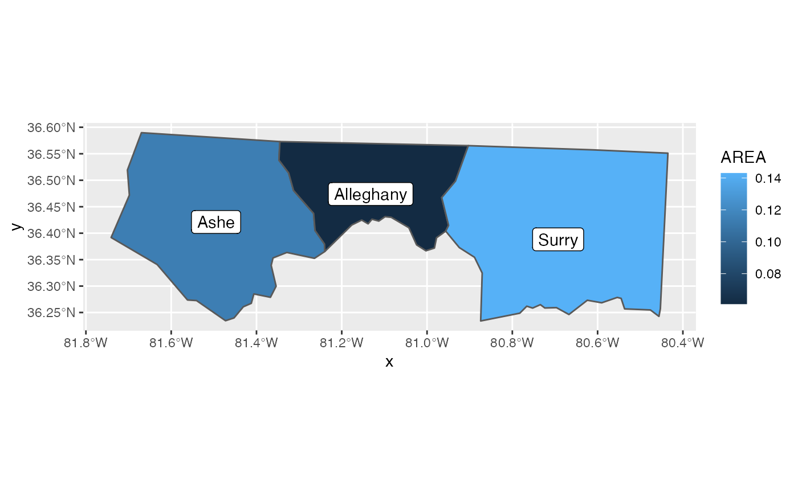

This set of geom, stat, and coord are used to visualise simple feature (sf)
objects. For simple plots, you will only need geom_sf() as it
uses stat_sf() and adds coord_sf() for you. geom_sf() is
an unusual geom because it will draw different geometric objects depending
on what simple features are present in the data: you can get points, lines,
or polygons.
For text and labels, you can use geom_sf_text() and geom_sf_label().
coord_sf( xlim = NULL, ylim = NULL, expand = TRUE, crs = NULL, default_crs = sf::st_crs(4326), datum = sf::st_crs(4326), label_graticule = waiver(), label_axes = waiver(), lims_method = c("cross", "box", "orthogonal", "geometry_bbox"), ndiscr = 100, default = FALSE, clip = "on" ) geom_sf( mapping = aes(), data = NULL, stat = "sf", position = "identity", na.rm = FALSE, show.legend = NA, inherit.aes = TRUE, ... ) geom_sf_label( mapping = aes(), data = NULL, stat = "sf_coordinates", position = "identity", ..., parse = FALSE, nudge_x = 0, nudge_y = 0, label.padding = unit(0.25, "lines"), label.r = unit(0.15, "lines"), label.size = 0.25, na.rm = FALSE, show.legend = NA, inherit.aes = TRUE, fun.geometry = NULL ) geom_sf_text( mapping = aes(), data = NULL, stat = "sf_coordinates", position = "identity", ..., parse = FALSE, nudge_x = 0, nudge_y = 0, check_overlap = FALSE, na.rm = FALSE, show.legend = NA, inherit.aes = TRUE, fun.geometry = NULL ) stat_sf( mapping = NULL, data = NULL, geom = "rect", position = "identity", na.rm = FALSE, show.legend = NA, inherit.aes = TRUE, ... )
| xlim, ylim | Limits for the x and y axes. These limits are specified
in the units of the default CRS. To specify limits in projected coordinates,
set |
|---|---|
| expand | If |
| crs | The coordinate reference system (CRS) into which all data should be projected before plotting. If not specified, will use the CRS defined in the first sf layer of the plot. |
| default_crs | The default CRS to be used for non-sf layers (which
don't carry any CRS information) and scale limits. If not specified, this
defaults to the World Geodetic System 1984 (WGS84), which means x and y
positions are interpreted as longitude and latitude, respectively. If
set to |
| datum | CRS that provides datum to use when generating graticules. |
| label_graticule | Character vector indicating which graticule lines should be labeled
where. Meridians run north-south, and the letters This parameter can be used alone or in combination with |
| label_axes | Character vector or named list of character values
specifying which graticule lines (meridians or parallels) should be labeled on
which side of the plot. Meridians are indicated by This parameter can be used alone or in combination with |
| lims_method | Method specifying how scale limits are converted into
limits on the plot region. For a very non-linear CRS (e.g., a perspective centered
around the North pole), the available methods yield widely differing results, and
you may want to try various options. Methods currently implemented include |
| ndiscr | Number of segments to use for discretising graticule lines; try increasing this number when graticules look incorrect. |
| default | Is this the default coordinate system? If |
| clip | Should drawing be clipped to the extent of the plot panel? A
setting of |
| mapping | Set of aesthetic mappings created by |
| data | The data to be displayed in this layer. There are three options: If A A |
| stat | The statistical transformation to use on the data for this layer, as a string. |
| position | Position adjustment, either as a string, or the result of a call to a position adjustment function. |
| na.rm | If |
| show.legend | logical. Should this layer be included in the legends?
You can also set this to one of "polygon", "line", and "point" to override the default legend. |
| inherit.aes | If |
| ... | Other arguments passed on to |
| parse | If |
| nudge_x | Horizontal and vertical adjustment to nudge labels by.
Useful for offsetting text from points, particularly on discrete scales.
Cannot be jointly specified with |
| nudge_y | Horizontal and vertical adjustment to nudge labels by.
Useful for offsetting text from points, particularly on discrete scales.
Cannot be jointly specified with |
| label.padding | Amount of padding around label. Defaults to 0.25 lines. |
| label.r | Radius of rounded corners. Defaults to 0.15 lines. |
| label.size | Size of label border, in mm. |
| fun.geometry | A function that takes a |
| check_overlap | If |
| geom | The geometric object to use display the data |
geom_sf() uses a unique aesthetic: geometry, giving an
column of class sfc containing simple features data. There
are three ways to supply the geometry aesthetic:
Do nothing: by default geom_sf() assumes it is stored in
the geometry column.
Explicitly pass an sf object to the data argument.
This will use the primary geometry column, no matter what it's called.
Supply your own using aes(geometry = my_column)
Unlike other aesthetics, geometry will never be inherited from
the plot.
coord_sf() ensures that all layers use a common CRS. You can
either specify it using the CRS param, or coord_sf() will
take it from the first layer that defines a CRS.
Most regular geoms, such as geom_point(), geom_path(),
geom_text(), geom_polygon() etc. will work fine with coord_sf(). However
when using these geoms, two problems arise. First, what CRS should be used
for the x and y coordinates used by these non-sf geoms? The CRS applied to
non-sf geoms is set by the default_crs parameter, and it defaults to
the World Geodetic System 1984 (WGS84). This means that x and y
positions are interpreted as longitude and latitude, respectively. You can
also specify any other valid CRS as the default CRS for non-sf geoms. Moreover,
if you set default_crs = NULL, then positions for non-sf geoms are
interpreted as projected coordinates. This setting allows you complete control
over where exactly items are placed on the plot canvas.
The second problem that arises for non-sf geoms is how straight lines
should be interpreted in projected space. The approach coord_sf() takes is
to break straight lines into small pieces (i.e., segmentize them) and
then transform the pieces into projected coordinates. For the default setting
where x and y are interpreted as longitude and latitude, this approach means
that horizontal lines follow the parallels and vertical lines follow the
meridians. If you need a different approach to handling straight lines, then
you should manually segmentize and project coordinates and generate the plot
in projected coordinates.
if (requireNamespace("sf", quietly = TRUE)) { nc <- sf::st_read(system.file("shape/nc.shp", package = "sf"), quiet = TRUE) ggplot(nc) + geom_sf(aes(fill = AREA)) # If not supplied, coord_sf() will take the CRS from the first layer # and automatically transform all other layers to use that CRS. This # ensures that all data will correctly line up nc_3857 <- sf::st_transform(nc, 3857) ggplot() + geom_sf(data = nc) + geom_sf(data = nc_3857, colour = "red", fill = NA) # Unfortunately if you plot other types of feature you'll need to use # show.legend to tell ggplot2 what type of legend to use nc_3857$mid <- sf::st_centroid(nc_3857$geometry) ggplot(nc_3857) + geom_sf(colour = "white") + geom_sf(aes(geometry = mid, size = AREA), show.legend = "point") # You can also use layers with x and y aesthetics: these are # assumed to already be in the common CRS. ggplot(nc) + geom_sf() + annotate("point", x = -80, y = 35, colour = "red", size = 4) # Thanks to the power of sf, a geom_sf nicely handles varying projections # setting the aspect ratio correctly. library(maps) world1 <- sf::st_as_sf(map('world', plot = FALSE, fill = TRUE)) ggplot() + geom_sf(data = world1) world2 <- sf::st_transform( world1, "+proj=laea +y_0=0 +lon_0=155 +lat_0=-90 +ellps=WGS84 +no_defs" ) ggplot() + geom_sf(data = world2) # To add labels, use geom_sf_label(). ggplot(nc_3857[1:3, ]) + geom_sf(aes(fill = AREA)) + geom_sf_label(aes(label = NAME)) }